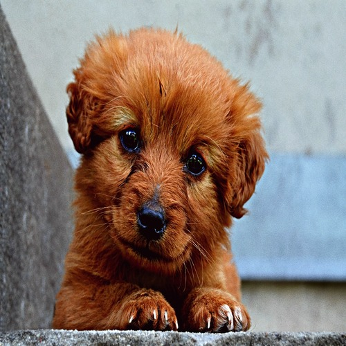

Animais que já foram adotados
Luke - O Cão Brincalhão
Obrigado por adotar o Luke! Um cão cheio de energia e disposição para brincar!
Belinha - A Cadelinha Carinhosa

Obrigado por adotar a Belinha! Uma cadelinha muito carinhosa que enche seus donos de amor e carinho!
Nicolau - O Gato dorminhoco
Obrigado por adotar o Nicolau! Um gatinho muito dorminhoco!
Mel - A Gata observadora
Obrigado por adotar a Mel! Uma gata muito observadora que adora observar a rua pelas janelas de casa!
Ted - O Cão Aventureiro
Obrigado por adotar o Ted! Um cãozinho energético e curioso que adora explorar o mundo ao seu redor!
Princesa - A Cadelinha Protetora
Obrigado por adotar a Princesa! Uma cadelinha leal e protetora que vai estar ao seu lado em todos os momentos!
Tadeu - O Gato inteligente
Obrigado por adotar o Tadeu! Um gatinho muito inteligente que adora aprender e se desafiar em aventuras!
Ariel - A Gata curiosa
Obrigado por adotar a Ariel! Uma gatinha muito curiosa que gosta de explorar cada cantinho!
<- Voltar